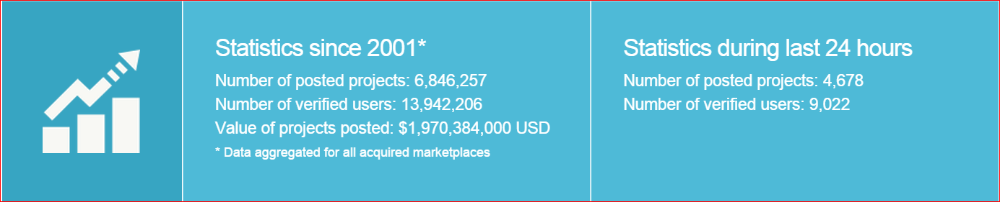

IDS 594 Project Report
- Find me on

IDS 594 Project Report
This website serves as documentation website for IDS 594 - Special Topics in Big Data Analysis taught by Professor Kupeng Zhang at UIC
The code for the project can be found on my GitHub
The project implements a Recommendation System for the data crawled from freelancer.com
Freelancer is a marketplace where employers and employees are able to find each other. The site allows employers to post work to get done.
Anybody is then able to offer quotes to complete the project, upon which point the original employer is able to award the work
Freelancer is one of the oldest and largest sites, claiming roughly two million employers and workers from 247 different geographic regions and with close to 6,850,000 projects posted on the site since 2001
I chose Freelancer because the site offers an open API for querying information about past jobs and users
The more detailed information on API endpoints and how data extraction is done is explained in Data section of this website. Additional details can be found on company's page here
The following figure gives a rough idea of traffic on freelancer.com

With almost 5000 projects being posted every day and such a huge base of available freelancers, it would be really great if we can do the following
Doing this will save a lot of time for both freelancers in searching for related projects and also for companies in searching for freelancers who can finish their project
The goal of my project is to implement Recommendation System which addresses the 2 problems I discussed earlier
I have chosen to recommend only top 5 results in both the cases. Recommend top 5 freelancers to a project and recommend top 5 projects to a freelancer
I have implemented 2 different approaches to achieve my goal
Definition: Content-based filtering methods are based on a description of the item and a profile of the user’s preference. In other words, these algorithms try to recommend items that are similar to those that a user liked in the past (or is examining in the present). In particular, various candidate items are compared with items previously rated by the user and the best-matching items are recommended
For my project I have implemented 3 types of algorithms for Content Based Approach
Definition: Definition: Collaborative filtering methods are based on collecting and analyzing a large amount of information on users’ behaviors, activities or preferences and predicting what users will like based on their similarity to other users. All the data sets are implicit data collections
For my project I have implemented
The detailed description of algorithms is explained in Implementation page